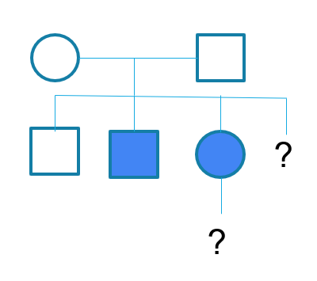

Simulação de Diagnóstico Genético
Lactente do sexo feminino, 4 meses de idade, previamente hígida, apresenta episódios de equimoses extensas após vacinas e hematomas musculares volumosos após traumas mínimos. Exames mostram atividade de fator VIII abaixo de 2%, compatível com hemofilia grave.
História Clínica:
L.A.S., lactente do sexo feminino, 4 meses de idade, previamente hígida, nasceu a termo por parto vaginal sem eventos perinatais. Evoluiu bem no período neonatal, sem icterícia significativa ou intercorrências infecciosas. Aos 3 meses, apresentou equimoses extensas em membros inferiores após vacina de rotina, de resolução lenta. Nas semanas subsequentes, desenvolveu hematomas espontâneos em face posterior de coxas e região glútea. Não há relato de sangramento mucoso, hemorragia gastrointestinal ou urinária.
Deu entrada na emergência há 10 dias devido a aumento progressivo de volume em coxa direita após leve trauma, sendo identificada coleção compatível com hematoma intramuscular volumoso. Hemograma sem alterações relevantes; entretanto, coagulograma demonstrou aPTT prolongado, com correção em mistura, e atividade de fator VIII inferior a 2%, sugerindo diagnóstico de hemofilia A grave.
Antecedentes pessoais e familiares:

Selecione uma categoria à esquerda para ver os exames disponíveis.
Os laudos dos exames solicitados aparecerão aqui após o processamento.
Nenhum exame solicitado ainda.
Vá para a aba "Solicitar Exames".